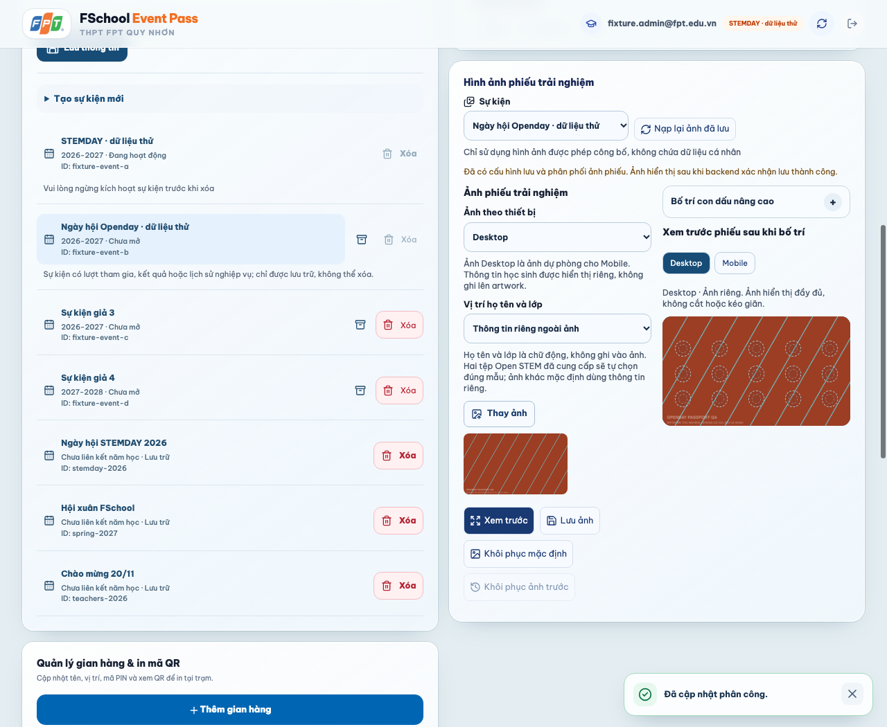
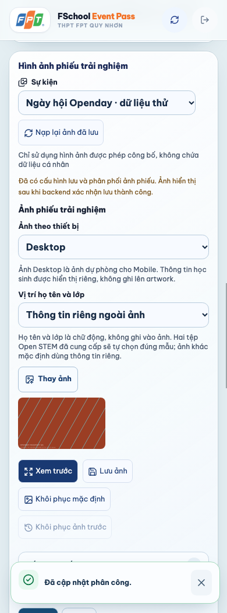
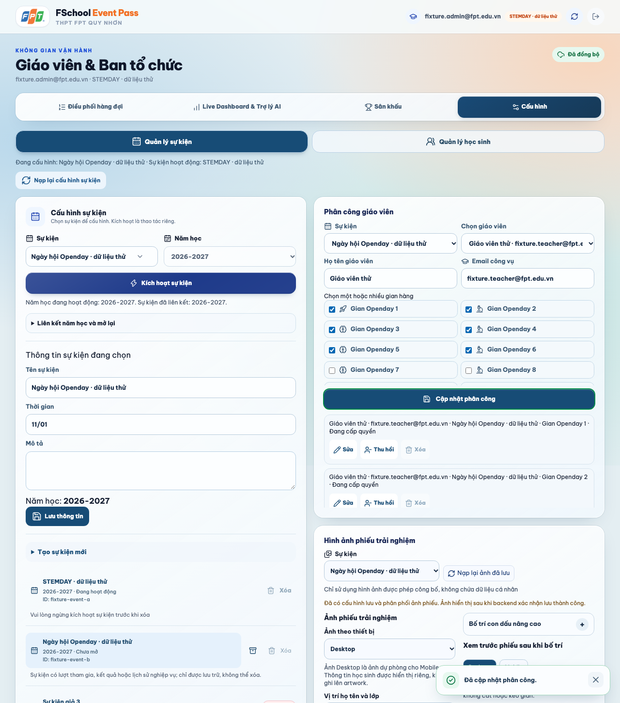
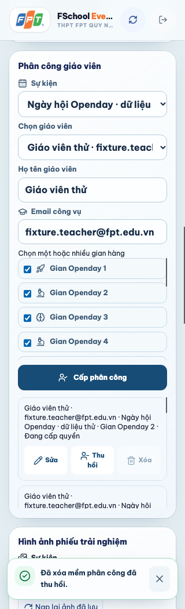

Phiếu trải nghiệm, xóa sự kiện và xóa phân công
FSchool Event Pass · THPT FPT Quy Nhơn · 23/11/2026.
Bản sửa cục bộ đã qua kiểm thử giả lập. Chưa nghiệm thu triển khai thực tế. Không cập nhật production, đổi quyền Web App/Drive, tạo/xóa file thật, gửi OTP thật hoặc ghi Google Sheets thật. Các thay đổi chưa commit được giữ nguyên; không khôi phục/xóa các tệp người dùng đã thay đổi từ trước.
1. Nguyên nhân và giải pháp cho bốn yêu cầu
| Yêu cầu | Hiện trạng trước sửa | Thay đổi |
|---|
| Bỏ ảnh chủ đề khỏi BTC | Module quản lý cả theme và passport; hai form ảnh cùng checkbox phê duyệt, làm luồng lưu phức tạp. | Xóa toàn bộ điều khiển theme và checkbox khỏi giao diện BTC. Giữ metadata, file Drive, API theme cũ và việc dùng theme ở khu vực giới thiệu học sinh. Không có migration xóa dữ liệu. |
| Một khu vực ảnh phiếu rõ ràng | Preview và tọa độ chưa chia theo luồng thay ảnh/bố trí. Nạp lại ảnh gọi GET_EVENT_VIEW của sự kiện đang hoạt động, có thể bỏ sót ảnh mới của sự kiện đang chọn. | Desktop: bên trái thay ảnh/thumbnail/xem/lưu/khôi phục, bên phải tọa độ và preview. Mobile một cột. Nạp lại dùng đúng GET_EVENT_SETUP(eventId đang chọn), gộp request và không cần GET_EVENT_VIEW toàn bộ. Lưu chỉ cập nhật từ ACK có metadata đúng; đối soát lỗi không tự gửi lại write. |
| Xóa sự kiện tạo nhầm | Nút cũ chỉ lưu trữ, chưa có quy tắc xóa mềm và khôi phục riêng. | Thêm MANAGE_EVENT với delete/restore theo eventId. Kiểm tra phiên/quyền events, revision, active event và dữ liệu phụ thuộc trong cùng LockService. Giữ Lưu trữ cho sự kiện cần giữ lịch sử. Sự kiện xóa mềm không hiện trong các selector thường; BTC khôi phục ở “Sự kiện đã xóa”. |
| Xóa từng phân công đã thu hồi | Danh sách nhóm theo giáo viên chỉ có Sửa/Thu hồi, dễ hiểu nhầm phạm vi thao tác khi giáo viên có nhiều gian. | Mỗi dòng là một eventId + boothId + email, gồm Sửa | Thu hồi | Xóa. DELETE_EVENT_ASSIGNMENT chỉ xóa mềm đúng dòng đã thu hồi, kiểm tra khóa dữ liệu/quyền/revision bên trong khóa. Các dòng khác, quyền ở sự kiện khác và lịch sử hoàn thành giữ nguyên. |
Checkbox đã được thay bằng câu: “Chỉ sử dụng hình ảnh được phép công bố, không chứa dữ liệu cá nhân”. Hành động lưu ảnh phiếu của BTC có quyền là hành động phát hành; cờ publishApproved do backend thiết lập. Học sinh/giáo viên thường vẫn bị từ chối trước khi tạo file. Giữ đầy đủ kiểm tra chữ ký MIME, kích thước, dung lượng, sự kiện và file ID lấy từ metadata backend. API không nhận file ID tùy ý để đọc Drive.
Ảnh đầu vào JPEG/PNG/WebP được chuẩn bị thành PNG/JPEG, giữ alpha bằng PNG, tối đa 1 MB và kích thước backend cho phép. Asset WebP cũ vẫn đọc được trong ứng dụng. Theme cũ không được dùng làm nền dự phòng của phiếu nữa: phiếu chỉ dùng passport, thiếu ảnh dùng nền mặc định và giữ dấu. Khu vực giới thiệu sự kiện vẫn có thể hiển thị theme cũ.
2. Quy tắc xóa và bảo toàn dữ liệu
Sự kiện: không xóa trực tiếp active event. Có queue/lượt tham gia, xác nhận, draw/drawHistory, eventStudent, vé/bình chọn legacy, EventAccounts hoặc lịch sử EventStaff sẽ bị chặn với lý do rõ ràng. Kiểm tra sử dụng dữ liệu Sheets chính thức dưới khóa, không dựa vào danh sách đang hiển thị hoặc cache frontend. Ảnh/cấu hình gian đơn thuần không bị xóa; khôi phục vẫn đọc lại được metadata cũ.
Xóa mềm lưu deletedAt/deletedBy và dấu vết lifecycleAudit trong bản ghi cấu hình hiện có; không tạo sheet/schema mới, không deleteRow. Khôi phục bỏ trạng thái xóa, không tự đổi activeEventId, năm học hoặc bật published. SAVE_EVENT_CONFIG thông thường giữ tombstone, không cho client cũ khôi phục bằng cách gửi lại danh sách cũ. Hai request cùng revision: một lần được ghi, lần còn lại nhận CONFLICT.
Phân công: phải thu hồi trước; nút Xóa bị khóa khi enabled=true. Xóa mềm giữ nguyên row EventStaff ở enabled=false, thêm dấu vết và ẩn khỏi danh sách quản lý thường. Quyền được đọc lại trên mỗi request. BTC có thể cấp lại chính event/booth/email khi cần; bản ghi cũ được dùng lại, audit còn dấu vết xóa, không tạo dòng phân công trùng. Không có thao tác xóa hồ sơ học sinh hoặc bản ghi hoàn thành.
Giới hạn hiện có vẫn là tối đa 40 gian và 400 học sinh; không cố định 6/10/15. Giới hạn 70 sự kiện và kích thước bản ghi Sheets vẫn áp dụng, bao gồm các sự kiện đã xóa mềm. Không tự dọn lịch sử khi đạt giới hạn.
3. File đã thay đổi và bộ file triển khai
| File | Hàm/phạm vi chính |
|---|
| EventWorkflow.gs | manageEventLifecycle_, eventDeletionDependency_, eventLifecycleRevision_; sửa eventPublicConfig_, saveEventConfig_, eventAdminSetup_, dispatchEventPass_ để lọc deleted và giữ audit, routing riêng. |
| EventAccess.gs | deleteEventAssignment_; sửa setEventAssignment_, eventStaff_, listRoster_, eventAccountContext_ và các guard phiên để loại deleted, giữ quyền các gian khác. |
| EventImages.gs | checkedStoredEventImage_; sửa saveEventImage_, eventImageDraft_, readEventImage_: passport không cần checkbox/approval từ client; kiểm tra lại file trước khi restore/layout/approve; giữ hợp đồng theme legacy. |
| Code.gs | eventApiVersion_ chỉ công bố khả năng quản trị/ảnh khi có đủ hàm mới; không làm đổi hợp đồng đăng nhập nếu phần quản trị thiếu file. OTP và xử lý phiên không đổi. |
| index.html | Markup chỉ còn passport, thumbnail và khu vực bố trí; callback nạp đúng selected eventId; chuẩn hóa eventRevision; deleteEvent chuyển sang handler xóa mềm. |
| event-admin.js | Danh sách sự kiện có Xóa/Khôi phục, kiểm tra contract mới; từng dòng phân công với ba nút; archiveManagedEvent, manageEventRemoval, removeManagedAssignment. |
| event-images.js | UI passport độc lập, bỏ listener/theme/checkbox; bảo toàn draft theo sự kiện; kiểm tra ACK metadata, reload đích và xử lý lỗi không tự retry write. |
| student-pass.js | Chỉ dùng ảnh passport cho phiếu; giữ nền mặc định khi thiếu ảnh, không đổi nguồn xác nhận con dấu. |
| event-ui.js / event-glass.css | Bỏ cấu hình icon control theme không dùng; bố cục hai cột/một cột và nhóm nút Xóa, giữ Glassmorphism/FPT/icon/animation. |
| tests/event-pass.test.cjs / scripts/event-upgrade-qa.cjs | Test dữ liệu/role/revision/history, lỗi ảnh, luồng thật qua website giả lập, hộp thoại native và ảnh chụp responsive. |
Manifest, cú pháp và SHA-256. Cần đồng bộ đủ Code.gs, EventAccess.gs, EventWorkflow.gs, EventImages.gs cho backend. Frontend nên cập nhật nguyên bundle trong manifest, gồm event-admin.js, event-images.js, student-pass.js, các CSS/JS phụ thuộc và vendor Lucide; không đưa tệp kiểm thử vào website production.
4. Kết quả kiểm thử và bằng chứng
| Bộ kiểm tra | Kết quả | Bằng chứng |
|---|
| Trước sửa | 86/86 PASS | Log baseline. |
| Toàn bộ tests/*.cjs hiện tại | 100/100 PASS, không bỏ qua | Log: 14 ca bổ sung, gồm không cần theme/checkbox; restore ảnh mất file bị chặn; sự kiện trùng tên, 7 loại phụ thuộc, xóa/restore giữ 395 hồ sơ, stale client; teacher quyền các gian khác, audit và cấp lại; bộ file thiếu/phiên bản cũ bị chặn. |
| Chrome nâng cấp | 76/76 PASS | JSON: upload/ACK/GET ảnh, reload và thiết bị khác, default/restore giữ dấu, 320/390/768/1280 px, PNG/JPEG/WebP/alpha, từ chối ghi/sai metadata không báo thành công, reload inactive event chỉ một GET_EVENT_SETUP; nút Xóa/Thu hồi/Khôi phục, cancel không gửi write. |
| Chrome đăng nhập | 33/33 PASS | JSON: mã học sinh, phiên, HTTP 401/metadata cũ, OTP giáo viên gửi/xác minh giả lập qua POST/redirect/JSON. |
| Chrome hồi quy giao diện | 50/50 PASS | JSON: loading, không submit trùng, quyền giáo viên, modal/focus, reduced motion/transparency, hàng chờ, dấu sau backend, bình chọn và quay thưởng. |
| Cú pháp và dependency | PASS | Parse JS/GS/inline và bốn GS ghép chung; CSS parse; không trùng ID hoặc thiếu module cục bộ; git diff --check đạt; suffix triển khai OTP giữ nguyên so với snapshot đầu đợt. |
Fixture: 395 học sinh, 12 lớp, 11 gian và khoảng 2.374 bản ghi; một sự kiện 15 gian độc lập, thêm sự kiện tạo nhầm. Chrome chặn HTTPS bên ngoài; Drive/Sheets/MailApp là mocks. Các bộ kiểm thử có giao nhau, không cộng thành số tình huống độc lập. Bằng chứng định dạng ảnh/alpha/bytes. Không dùng số liệu này để tuyên bố Google Drive hoặc production đã đạt.

Ảnh phiếu desktop: bên trái thao tác ảnh, bên phải bố trí/xem trước.

Ảnh phiếu mobile một cột, không checkbox.

Giữ hai cột BTC và Glassmorphism hiện có.

Ba nút theo từng phân công trên 320 px.
Ảnh bổ sung: Phân công 390 px · Phiếu và con dấu · Quản lý sự kiện 320 px. Tất cả là ảnh chụp dữ liệu giả.
5. Những chức năng đã bảo toàn
OTP giáo viên và phiên; shared-code login học sinh; quyền BTC; quyền giáo viên theo event/booth; roster/năm học; QR/PIN, bốc số và thứ tự hàng chờ; xác nhận hoàn thành từ backend; dấu tròn, tên/icon/thời gian; vé may mắn, đánh giá, bình chọn và quay thưởng. Giữ ACK của các thao tác ghi đã tối ưu, đối soát nền và revision ngăn poll cũ ghi đè. Không tăng polling, không tạo dấu từ suy đoán frontend.
Không xóa file theme/passport cũ, không dọn Drive, không xóa hàng Sheets. Các cờ xóa mềm chỉ được ghi khi BTC thực hiện action và xác nhận trên môi trường đã triển khai.
6. Hướng dẫn cập nhật Apps Script và frontend
- BTC lưu bản sao Sheets/metadata, version ID backend và bundle frontend hiện tại. Giữ bí mật cấu hình trong kho bảo mật, không gửi token hoặc Script Properties nhạy cảm vào log.
- Đầu tiên dùng project/Sheets/Drive staging riêng và dữ liệu giả. Thay đầy đủ nội dung bốn file Code.gs, EventAccess.gs, EventWorkflow.gs, EventImages.gs rồi Save; không tạo version khi mới cập nhật một phần.
- Giữ nguyên Script Properties hiện có. Ảnh cần
FS_EVENT_IMAGE_FOLDER_ID của thư mục artwork riêng; API học sinh cần FS_EVENT_PUBLIC_IMAGES=true. Không chia sẻ công khai thư mục. Các property OTP, HMAC/mã chung, quyền BTC và Spreadsheet ID không cần thay trong đợt này. Script Properties.
- Deploy → Manage deployments → chọn deployment staging → Edit → New version → Deploy. Giữ cấu hình execution/access được BTC phê duyệt. Lưu đúng URL /exec; Save mã trong Editor không cập nhật versioned deployment hiện có. Tài liệu deployment.
- POST GET_EVENT_API_VERSION tới staging /exec, kiểm tra
eventAdminVersion=event-admin-setup-v2, eventImageVersion=event-images-v3. Các hợp đồng event-pass-scoped-v1, student-event-access-v1, teacher-otp-v3 và teacher-portal-v1 giữ nguyên. Backend thiếu hàm không được công bố khả năng mới.
- Cập nhật frontend staging nguyên bundle và đúng staging /exec. Tải mới trang; kiểm tra không còn control theme/checkbox, upload/readback/restore, ảnh học sinh, xóa sự kiện tạo nhầm, chặn sự kiện có lịch sử, khôi phục, thu hồi/xóa từng phân công và vai trò trực tiếp qua API. Không thay /exec bằng /dev trong nghiệm thu.
- Chỉ sau khi staging thật đạt và BTC phê duyệt riêng mới cập nhật production: backend đủ bốn file → metadata/kiểm tra quyền → frontend đầy đủ. Không tự đổi quyền Web App sang công khai khi gặp HTTP 401.
7. Rủi ro và phần chưa nghiệm thu thực tế
- Chưa triển khai bản này lên staging Google thật hoặc production. Chưa xác nhận quyền Drive, scopes/Workspace policy, POST/CORS/redirect từ website thật và xem trước Drive thật.
- Cần nghiệm thu hai BTC/giáo viên đồng thời trên staging Sheets thật, nhiều thiết bị và mạng chậm/đứt nối. Mock chứng minh kiểm tra quyền/revision và yêu cầu giữ khóa, không thay thế bằng chứng concurrency dịch vụ Google.
- Ảnh có thể được tạo riêng tư trên Drive nhưng chưa gắn metadata nếu xảy ra xung đột/mất quyền sau tạo file. Không tự xóa hoặc tự retry thao tác ghi; nạp lại và đối chiếu trước khi BTC quyết định.
- Dòng hướng dẫn thay checkbox nghĩa là BTC chịu trách nhiệm chọn artwork được phép công bố; ứng dụng không tự nhận diện dữ liệu cá nhân trong ảnh.
- Phân công kể cả đã thu hồi/xóa mềm vẫn là lịch sử cần giữ, vì vậy backend chặn xóa sự kiện có lịch sử này. Dùng Lưu trữ, không xóa thủ công các row để vượt điều kiện.
- Không rollback tùy tiện về backend cũ không hiểu deletedAt: có thể hiện lại sự kiện xóa mềm hoặc làm mất tombstone khi lưu cấu hình. Nếu cần khôi phục phiên bản, giữ dữ liệu, tạm dừng ghi và chọn bản hiểu cơ chế xóa mềm hoặc sửa tiến; đối chiếu cả bundle trước khi mở lại.
- Chưa kiểm tra Safari iPhone/Chrome Android trên thiết bị thật; đã kiểm tra Chrome với viewport/touch và reduced motion/transparency.
Trạng thái: sẵn sàng để BTC rà soát mã và nghiệm thu trên staging thật. Chưa kết luận hoàn thành triển khai/production. Không có thao tác triển khai production trong đợt này.